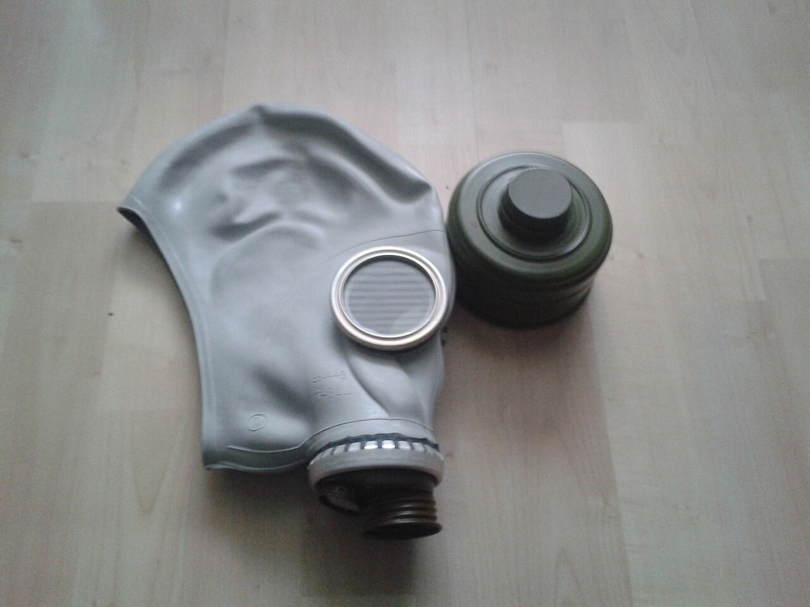

Азаматтық қорғаныс Civil Defense Гражданская оборона и защита
Тыныс алу мен теріні қорғайтын құралдар және противогазды «Газы» командасы бойынша кию. Equipment protecting breathing and skin, and donning the gas mask on the "Gas" command. Средства защиты органов дыхания и кожи и надевание противогаза по команде «Газы».

Жеке қорғану құралдары (ЖҚҚ / СИЗ) — адамды уландырғыш заттардан (УЗ), радиоактивті заттардан (РЗ) және бактериялық құралдардан (БҚ) қорғайтын құралдар. Тағайындалуы бойынша тыныс алу мүшелерін және теріні қорғайтын болып, ал жұмыс қағидасы бойынша — сүзгілі және оқшаулағыш болып бөлінеді. Personal protective equipment (PPE) shields a person from toxic agents (CA), radioactive substances (RS) and bacterial agents (BA). By purpose it divides into respiratory and skin protection, and by operating principle into filtering and insulating types. Средства индивидуальной защиты (СИЗ) — средства защиты человека от отравляющих веществ (ОВ), радиоактивных веществ (РВ) и бактериальных средств (БС). По назначению делятся на защиту органов дыхания и кожи, а по принципу действия — на фильтрующие и изолирующие.
Сүзгілі — ауаны сүзіп тазартады (қалыпты жағдайда). Оқшаулағыш — сыртқы ауадан толық бөлектеп, өз оттегін береді (оттегі аз немесе УЗ концентрациясы өте жоғары кезде). Filtering means purify the air by filtering it (in normal conditions). Insulating means seal the body off from outside air and supply their own oxygen (when oxygen is low or agent concentration is very high). Фильтрующие очищают воздух фильтрацией (в обычных условиях). Изолирующие полностью отделяют от наружного воздуха и подают собственный кислород (мало кислорода или очень высокая концентрация ОВ).
| ҚұралMeansСредство | ТағайындалуыPurposeНазначение | Неден қорғайдыProtects fromОт чего защищает |
|---|---|---|
| Сүзгілі противогаз (маска, сүзгі-сіңіргіш қорап, клапандар)Filtering gas mask (face piece, filter-absorber box, valves)Фильтрующий противогаз (маска, фильтрующе-поглощающая коробка, клапаны) | Дем алатын ауаны тазартады.Purifies the air being breathed.Очищает вдыхаемый воздух. | УЗ, РЗ, БҚ буы мен аэрозолі.CA, RS, BA vapours and aerosols.Пары и аэрозоли ОВ, РВ, БС. |
| Оқшаулағыш противогазInsulating gas maskИзолирующий противогаз | Сыртқы ауадан бөлектеп, өз оттегін береді.Isolates from outside air and supplies its own oxygen.Изолирует от наружного воздуха и подаёт свой кислород. | Оттегі аз немесе концентрация өте жоғары жерде.Low-oxygen areas or very high concentrations.Недостаток кислорода или очень высокие концентрации. |
| РеспираторRespiratorРеспиратор | Жеңіл сүзгілі жарты маска.A light filtering half-mask.Лёгкая фильтрующая полумаска. | Шаң, радиоактивті шаң мен аэрозольдер.Dust, radioactive dust and aerosols.Пыль, радиоактивная пыль и аэрозоли. |
| Мақта-дәкелі таңғыш / шаңтұмылдырықCotton-gauze bandage / dust maskВатно-марлевая повязка / противопыльная маска | Ең қарапайым, қолдан жасалатын құрал.The simplest, improvised means.Простейшее, изготовляемое подручно средство. | Шаң мен ірі аэрозольден ішінара.Partly from dust and coarse aerosols.Частично от пыли и крупных аэрозолей. |
Бас айналымы (қастан, құлақ үстінен, шүйде арқылы) өлшеніп, кестеге сай рост (өлшем) анықталады. Дұрыс таңдалған маска бетке тегіс жабысып, қыспауы әрі ауа жібермеуі тиіс. The head circumference is measured (over the brow, above the ears, across the back of the head) and the size (rost) chosen from the chart. A correctly fitted face piece sits flush, does not pinch and lets in no air. Измеряют обхват головы (через надбровья, над ушами и затылок) и по таблице определяют рост (размер). Правильно подобранная маска плотно прилегает, не давит и не пропускает воздух.
Маска киілген соң сүзгі-сіңіргіш қораптың тесігін алақанмен жауып, дем тартып көреді: герметикалық болса — дем тарту мүмкін емес. Ауа сорылса, маска дұрыс отырмаған — қайта реттеу қажет. With the mask on, cover the opening of the filter box with the palm and try to inhale: if sealed, inhaling is impossible. If air gets in, the mask is fitted wrong and must be readjusted. Надев маску, закрывают ладонью отверстие фильтрующей коробки и делают вдох: при герметичности вдох невозможен. Если воздух проходит — маска подобрана неверно, нужно переподогнать.
ОЗК (жалпы әскери қорғаныс жиынтығы)OZK kitОЗК
Оқшаулағыш плащ, қорғаныс шұлықтары мен қолғаптар; УЗ, РЗ, БҚ-дан қорғайды.Insulating cape, protective stockings and gloves; guards against CA, RS, BA.Изолирующий плащ, защитные чулки и перчатки; от ОВ, РВ, БС.
Жеңіл қорғаныс костюмі (Л-1)Light protective suit (L-1)Лёгкий защитный костюм (Л-1)
Біртұтас оқшаулағыш костюм — ұзақ жұмысқа ыңғайлы.A one-piece insulating suit, suited to longer work.Цельный изолирующий костюм, удобен для длительной работы.
Қолдағы құралдарImprovised meansПодручные средства
Плащ-палатка, резеңке жабын, етік пен қолғап — уақытша қорғаныс.Ground-sheet cape, rubber covers, boots and gloves — temporary cover.Плащ-палатка, резиновые накидки, сапоги и перчатки — временная защита.